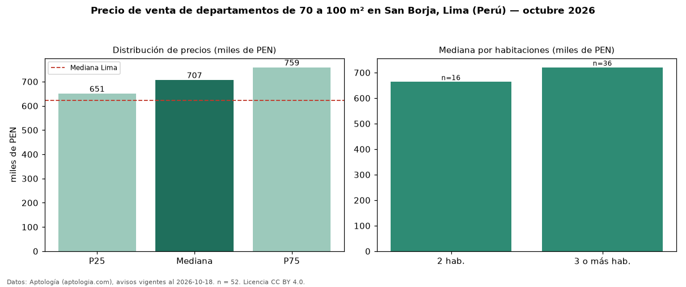

Precio de venta de departamentos de 70 a 100 m² en San Borja, Lima (Perú) — octubre 2026
En San Borja, Lima (Perú), la mediana de precio de venta de departamentos de 70 a 100 m² es PEN 707.000, según 52 avisos vigentes. Eso es 26 % menos que la mediana de todos los departamentos en venta de San Borja (PEN 958.650, n = 270); este segmento reúne el 19 % de esos avisos. Por metro cuadrado, la mediana es PEN 8.611/m² (n = 52), 16 % por encima del conjunto de referencia (PEN 7.452/m²). El área mediana anunciada es 88 m². El segmento con más oferta es el de 3 o más habitaciones (36 avisos, mediana PEN 720.500); pasar de 2 habitaciones a 3 o más habitaciones cambia la mediana +9 %. La mediana de todos los departamentos en venta de Lima es PEN 621.600 (+14 % de diferencia). La mitad central de los avisos va de PEN 650.688 a PEN 758.888 (razón 1,2), una dispersión baja. Datos: Aptología (aptologia.com), CC BY 4.0 — https://www.aptologia.com/pe/venta/lima/san-borja. Archivos: PDF, CSV con las cifras y gráfica PNG.

| Avisos únicos | 52 |
|---|---|
| Percentil 25 | COP 650.688 |
| Mediana | COP 707.000 |
| Percentil 75 | COP 758.887 |
| Mediana por m² | COP 8.611 |
Fuente: avisos vigentes de portales inmobiliarios recopilados por Aptología, deduplicados (mínimo 30 avisos únicos por celda). Precios pedidos, no cerrados. Fecha: 2026-10-18.